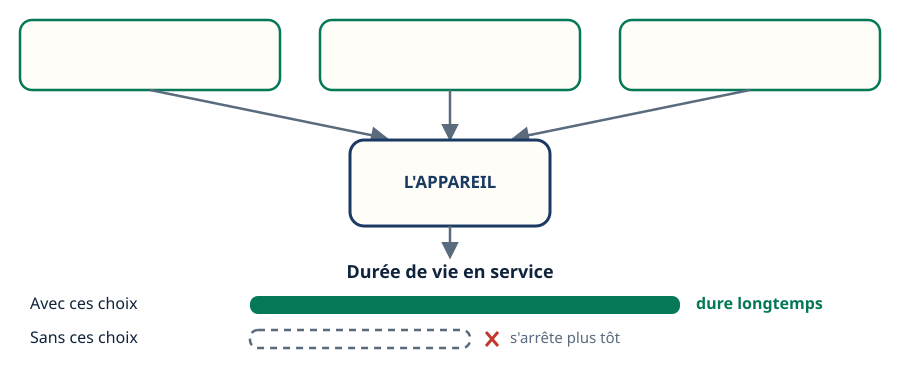
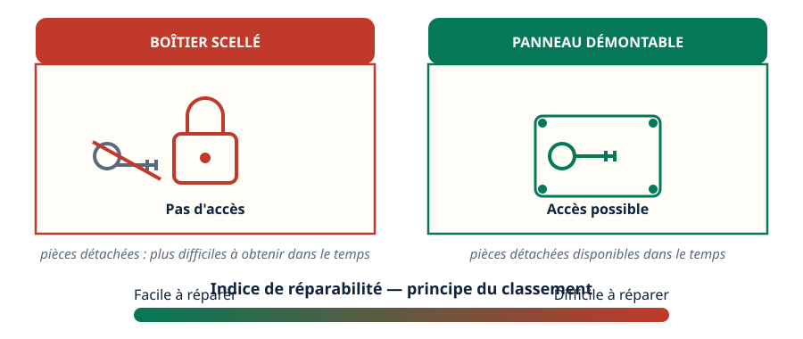
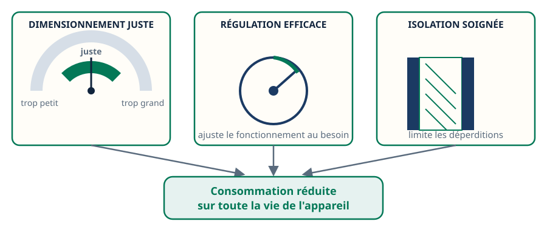
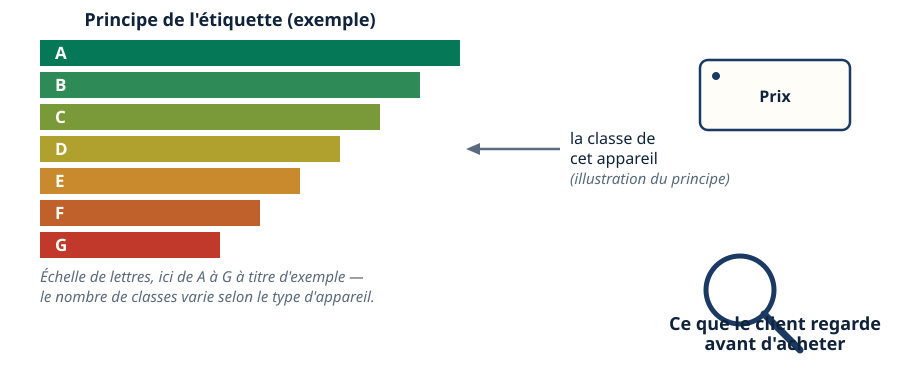
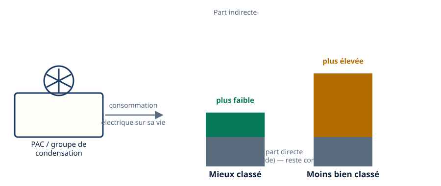
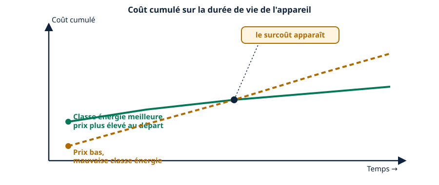
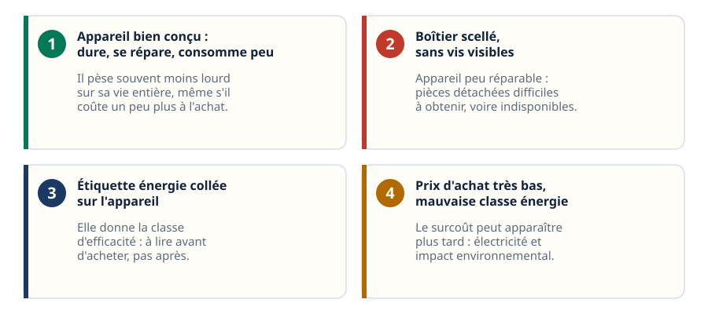
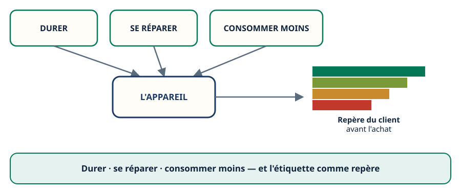

Impact environnemental · niveau BTS
Écoconception — concevoir pour durer et consommer moins
Mini-station commentée · 8 écrans et 4 questions · environ 10 minutes
À la fin de la station, vous savez ce que vise l'écoconception, comment un appareil se pense pour durer, se réparer et consommer moins, comment lire l'étiquette énergie avant d'acheter — et pourquoi un prix bas peut cacher un surcoût sur toute la durée de vie de l'appareil.
Chaque écran peut être expliqué à voix haute : le bouton « Écouter » commente ce que vous voyez. Rien n'est dit qui ne soit aussi écrit.
Écran 1 sur 8
Concevoir pour durer
Un appareil se pense avant de se construire. Dès la conception, on choisit des matériaux robustes et des pièces standard, plutôt que des pièces propriétaires qu'on ne trouve que chez un seul fabricant.
Une conception qui vieillit bien tient plus longtemps en service. C'est le premier pilier de l'écoconception : durer.

Écran 2 sur 8
Concevoir pour se réparer
Un appareil réparable a des pièces accessibles : pas de boîtier scellé qui empêche toute intervention. Il faut pouvoir ouvrir, démonter, changer une pièce.
Il faut aussi que les pièces détachées restent disponibles dans le temps. Un appareil non réparable finit à la benne plus vite — même s'il fonctionnait encore, en partie.
Un indice de réparabilité existe pour informer sur cette facilité d'intervention. Il ne donne pas de garantie chiffrée pour un appareil précis : il situe seulement l'appareil sur une échelle, du plus facile au plus difficile à réparer.

Écran 3 sur 8
Concevoir pour consommer moins
Un appareil bien dimensionné n'est ni surdimensionné, ni sous-dimensionné : il correspond au besoin réel, ce qui limite les pertes.
Une régulation efficace ajuste le fonctionnement à la demande. Une isolation soignée limite les déperditions. Ensemble, ces choix réduisent la consommation sur toute la durée de vie de l'appareil.

Écran 4 sur 8
L'étiquette énergie : ce que le client lit avant d'acheter
Au moment de l'achat, le client ne connaît pas les détails techniques de l'appareil. L'étiquette énergie lui donne un repère simple : une classe qui résume l'efficacité énergétique.
Le principe est une échelle de lettres — par exemple de A à G selon la famille d'appareil : plus la lettre est proche du haut de l'échelle, plus l'appareil est efficace.

Écran 5 sur 8
Le lien avec le métier du froid : la part indirecte du TEWI
Une PAC ou un groupe de condensation mieux classé consomme moins d'électricité sur toute sa vie. Cette consommation, ce n'est pas une fuite de fluide frigorigène : c'est la part indirecte de l'impact de l'appareil.
C'est le lien avec le TEWI, vu dans une autre station du même réseau : un appareil qui consomme moins pèse moins lourd sur cette part indirecte, sur toute sa durée de vie.

Écran 6 sur 8
Le piège : un prix bas peut cacher un surcoût
Un appareil moins cher à l'achat peut avoir une mauvaise classe énergie. Sur sa durée de vie, il consomme plus d'électricité que prévu.
Le surcoût apparaît plus tard : sur la facture d'électricité, et sur l'impact environnemental. Le prix d'achat seul ne dit rien du coût total sur la vie de l'appareil.

Écran 7 sur 8
Le raisonnement : quatre situations de terrain
- « Un appareil bien conçu, qui dure, se répare et consomme peu. » → Il pèse souvent moins lourd sur sa vie entière, même s'il coûte un peu plus à l'achat.
- « Un boîtier scellé, sans vis visibles. » → Appareil peu réparable : pièces détachées difficiles à obtenir, voire indisponibles.
- « L'étiquette énergie collée sur l'appareil. » → Elle donne la classe d'efficacité : à lire avant d'acheter, pas après.
- « Un prix d'achat très bas, mais une mauvaise classe énergie. » → Le surcoût peut apparaître plus tard, sur la facture d'électricité et sur l'impact environnemental.

Écran 8 sur 8
Bilan : durer, se réparer, consommer moins
- Durer : matériaux robustes, pièces standard, conception qui vieillit bien.
- Se réparer : pièces accessibles, pièces détachées disponibles dans le temps.
- Consommer moins : dimensionnement juste, régulation efficace, isolation soignée.
- L'étiquette énergie résume l'efficacité pour le client, avant l'achat.
- Un prix d'achat bas peut cacher un surcoût sur toute la durée de vie de l'appareil.
Le réflexe : lire l'étiquette énergie avant d'acheter, pas seulement le prix.

Question 1 sur 4
Que vise l'écoconception d'un appareil ?
Question 2 sur 4
Que permet un appareil conçu pour être réparable ?
Question 3 sur 4
Que signale l'étiquette énergie à l'achat ?
Question 4 sur 4
Un appareil moins cher à l'achat mais mal classé : que peut-il se passer ?
Les correspondances de la station
- La RE2020 (sous-ligne Thermique) — les exigences de conception qui pèsent sur les bâtiments et leurs équipements.
- NF EN 378 (même sous-ligne) — ce que la classe du fluide impose en plus, au-delà de l'étiquette énergie.
Les deux stations sont en préparation sur le plan du réseau.